Department of Chemical Engineering
Indian Institute of Technology, Delhi
❧
दीपक जहाँ होता है, वहाँ रोशनी करता है।
A lamp brings light wherever it exists.
A line he often returned to.
Prof. Ashok Kumar Gupta, known to thirty-five years of Chemical Engineering students at IIT Delhi simply as “Daddu,” was the kind of teacher whose first lecture made you fall in love with the subject, and whose office door stayed open for the rest of your life. He taught Introduction to Chemical Engineering, Thermodynamics, and Mass Transfer; he supervised dissertations; he intervened, unbidden, when bureaucratic errors crept into students’ grades; he memorised the name of every face in his classroom.
Outside the lecture hall, he lived a quiet, deliberately small life. He slept on the floor. He fasted on Sunday nights, a practice he had kept since the 1960s. He listened to the news only on the radio. He donated blood regularly. He fed birds at his window. He read the Bhagavad Gita not as scripture to recommend, but as a manual to inhabit.
He was a fixture of the Department of Chemical Engineering at IIT Delhi for nearly fifty years, first as a student and then as a faculty member, mentor, and Head of Department, eventually staying on as Professor Emeritus. He passed away on 10 March 2026.
This page collects the memories of the students, colleagues, and family who knew him. They were gathered in March, April, and May of 2026, in the weeks after he passed away.
In his own words
“We are born chemical engineers.”
A refrain from his Introduction to Chemical Engineering lectures.
अति सुंदर।
Ati sundar. Beautifully done.
His signature praise, recalled by students across decades.
“Engineering is much harder in Hindi. If you can master that, you’ll do brilliantly in English.”
Said in his office to a first-year student from a Hindi-medium school, who had walked in feeling out of place.
प्रभु से हमेशा प्रार्थना करते रहें, और उनकी कृपा सब पर बनी रहे।
Always keep praying to the Lord, and may His grace be upon everyone.
How he closed almost every conversation.
“Let us all be thankful and grateful to the Almighty for everything.”
The last lesson he passed to his grandson.
तुम्हारा स्वाध्याय कैसा चल रहा है?
How is your self-study going?
On the ninth day in the ICU, oxygen and pipes in place, the first thing he said when his niece walked through the door.
From his students
For many, the first encounter with him was the first lecture of the first year, the seminar that turned an unfamiliar subject into a passion. They speak of his warmth, his memory for names, the patience with which he taught the same idea five different ways until it landed.
Mayank Agrawal
Student
Professor AKG was someone who truly left an impact on me. In my very first semester at IIT Delhi, I attended his “Intro to Chem” seminar classes. Coming from a Hindi-medium background, I struggled with the language in general, especially in those early months.
One day, we happened to cross paths near block II. He remembered me from the class and we walked together for a few minutes. He asked about me about the semester and I opened up about the challenges I was facing. Without a second thought, he took me to his office, where he showed me the Hindi-medium books he still read. He then said something I’ll never forget: “Engineering is much harder in Hindi. If you can master that, you’ll do brilliantly in English.”
That simple conversation gave me a sense of confidence I still carry with me. As he often said, “We are born chemical engineers.” He truly was, not just a brilliant chemical engineer but also an exceptional educator who touched lives in ways he’ll never know.
Ritu
Student
I first met Prof. AKG during my counseling session after JEE, when I was trying to decide my department and college. At the time, I had already made up my mind to pursue Civil Engineering. But through his sheer passion for the subject and his conviction about the possibilities within it, he persuaded me to consider Chemical Engineering instead. Looking back, that conversation was one of those pivotal moments that quietly shape the course of my journey.
Like many of us who encountered him as teenagers just beginning our college lives, I didn’t always agree with some of his teaching methods at the time. But even then, it was impossible not to recognise the depth of his commitment, as an educator, as a mentor, and as someone who genuinely believed in the potential of his students.
What stood out most was how strongly he encouraged us to think beyond ourselves: to consider the broader impact we could create and the responsibility that comes with knowledge and opportunity. Over the years, I have often reflected on those lessons, and I believe they have influenced my thinking and growth more than I probably realised at the time.
For that, I will always remain grateful. My thoughts are with his family and with the entire IIT Delhi community who had the privilege of knowing him and learning from him.
Sidharth Sarawgi
Student
He was our teacher in first year and his was the only course I excelled effortlessly. Very learned and polite teacher. Unlikely of what we see in first year. His course helped me get the self belief back. My prayers for his family. May his soul rest in peace.
Rama
Student
Daddu’s very first class in my first year is what got me interested in Chemical Engineering. He was one of the kindest Professors at IIT Delhi. Throughout my undergraduate years, I would ask him for advice, be it for internship or struggling with coursework, he always made time to talk and offer guidance. I am so grateful for his mentorship and that I had the opportunity to learn from him.
Sumit Kumar Gupta
Student, B.Tech 2012–2016
He taught our batch the introduction to Chemical Engineering. The way he used to teach us, taking us to different labs and sharing his experiences from visiting various universities, left a lasting impression on me. I still remember those moments vividly. His teachings have deeply inspired me in my academic journey and continue to motivate me to work hard.
Pallavi Grover
Student
Sir, thank you for being such a passionate teacher and an amazing human being! You made me see the intricacies of chemical engineering and made it super interesting. Will always remember the warmth with which you taught and interacted with us. Thank you!
Bharti Singhla
Student
Prof AKG sir started our journey at IIT the Course on Introduction to Chemical Engineering, and everything that he taught has been so valuable all through. Along with that, sir was also a great mentor on making many decisions during the journey of college and beyond. I can recall being able to discuss with sir and get advice when I was confused about which internship to apply for, whether to go for exchange or not, and the summer when my grandmother had passed away and I was struggling with managing my research project. He was truly a blessing for all the students, and we often talked about his kindness and willingness to help students.
Ankur Gupta
Student, B.Tech (2008–2012). Curator of this collection.
For those who knew Prof. AKG, he was an inspiration. He did not preach his values; he lived them.
I can go on about his outsized impact on my life, but I would just share the quote he said the most to me: “दीपक जहाँ होता है, वहाँ रोशनी करता है।” which roughly translates to “Wherever a lamp is present, it brings light.”
Prof. AKG was a living lamp and will always be, wherever he is today. I will always aspire to be like him, as an educator and as a mentor.
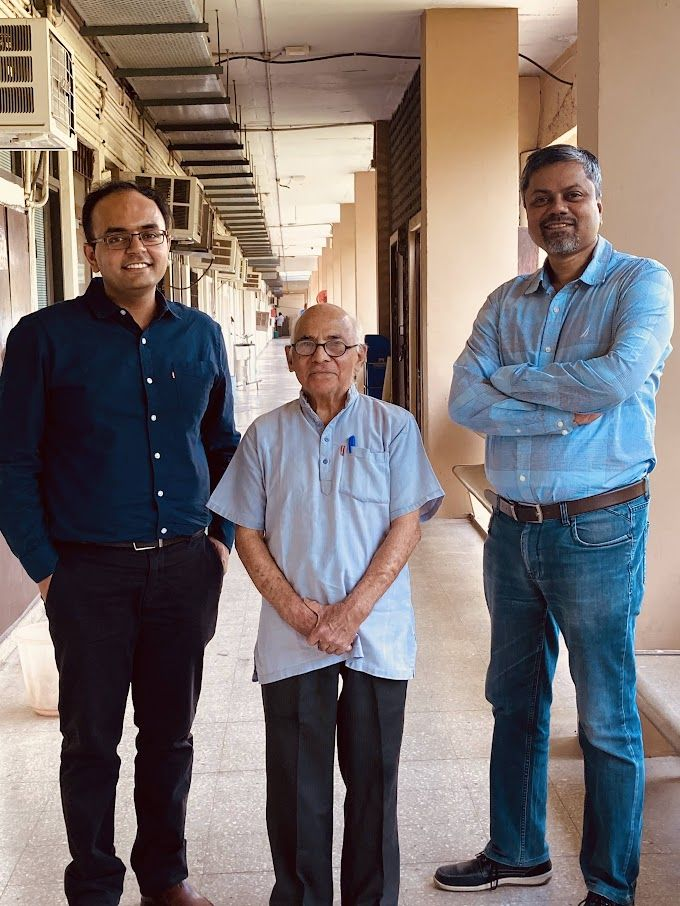
Photo of Ankur’s last in-person interaction with Prof. AKG. 30th May 2024, with Prof. Shantanu Roy.
Anjali Mittal
Student
During my final year at IIT Delhi, I met Prof. A. K. Gupta unexpectedly on campus. After exchanging pleasantries, Prof. A. K. Gupta commended me for my academic performance, and told me that I would achieve success in my career if I kept working hard. That conversation with him motivates me almost 10 years later. It is very powerful to know that one of my teachers believed in me, and keeps me going during challenging times. He was a beautiful soul and was supportive towards his students. I am grateful to have taken multiple classes with him at IIT Delhi.
Garima Dwivedi
Student
Though Sir is no longer with us, his words and teachings remain deeply meaningful. He reminded us to always be grateful to God and to everyone in society who makes our lives better. He also emphasised that beyond our professional work, caring for our children and family is equally a noble and virtuous responsibility.
My most memorable birthday was on 19 October 2024, when I cut my birthday cake at AKG Sir’s home. On that day, Sir gifted Guncha and me a copy of the Bhagavad Gita.
Parth Chopra
Student
I am fortunate to have had him as my ethics faculty in my first year, where his wisdom and values left a lasting impression on me. His kindness, moral strength, and eagerness to help will always be remembered and deeply missed.
Dr. Vikrant Sarin
Student. Managing Director at HR Consultant LLC.
Very sad to hear the news. He was a deeply dedicated teacher whose warmth and kindness touched the lives of many students. He will be greatly missed.
Manya Ranjan
Student
So sorry to hear this. Prof AKG was a true teacher for many of us and inspired many of us. I’m sure he’s gone to a good place. Ankur, thank you for doing this.
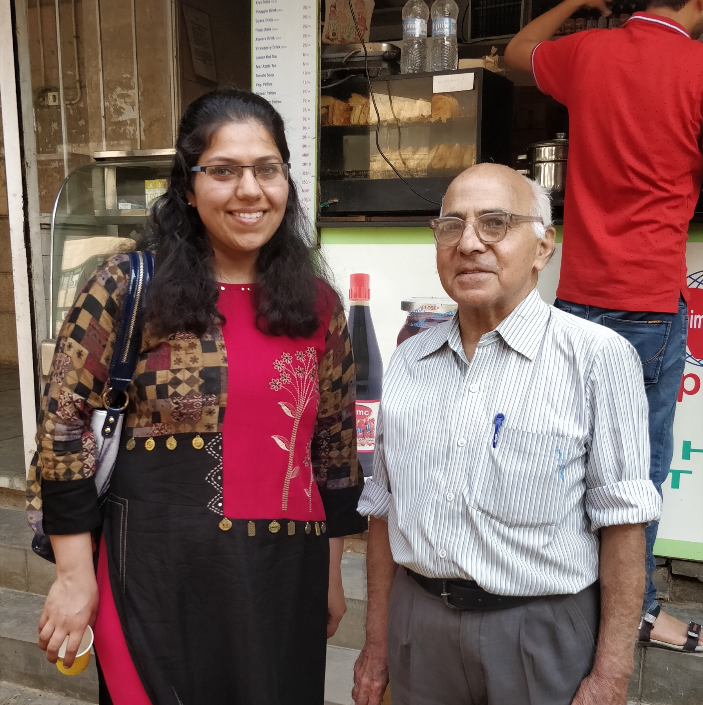
Near the reading room, June 2018. “He was probably saying something delightful about the world around us.” Photo and recollection shared by Charu Mehta, whose tribute about the delight of his everyday interactions appears below.
He stepped in when no one asked
A recurring note in the tributes: a quiet, unsolicited kindness. He noticed who was struggling. He made the calls that other people would have left to someone else. He treated his obligation to his students as something larger than the syllabus.
Saurabh Gupta
Student, batch of 2001
Deeply saddened to hear this news. As a member of the 2001 batch, I still remember Professor Gupta with immense fondness and gratitude.
During my first year, a calculation error in my final marks resulted in an ‘F’ grade. Though he didn’t know me personally at the time, he stepped in the moment he became aware of the situation. He took it upon himself to coordinate with everyone involved to ensure the error was rectified and my grades were corrected.
It is rare to encounter someone so selfless and consistently ready to help. He was a true guiding light for his students. Rest in peace, Sir.
Sigra Sharma
Student, BTP advisee
I had the privilege of having Prof. AK Gupta (Prof. AKG, as many of us fondly called him) as my BTP guide. He was an incredibly humble, grounded, and non-judgmental person who made it easy for students to learn and grow. I don’t have any photos to share, but I want to acknowledge that whatever I was able to accomplish during my BTP was largely because of his patient support and guidance. I will always remember him with gratitude.
Atul Kumar
Student
In his course each loss in attendance cost 1 mark, even when you are asked to leave the class for not bringing a calculator or having conversation during the class. I had to leave the class for both these reasons and lost one credit. After passing out from the college it became part of my memory, neither a good one or bad one, but just a beautiful college memory of a great professor who taught with passion and loved by his students and fondly remembered as “Daddu”.
Simae Mattewal
Student, 2018
I was in a lab course with him in 2018 and he loved teaching so much that he would come to every group and ask us insightful questions. He never made us feel bad if we didn’t know the answer, always helped us get to fundamental understanding.
Saurabh Subramaniam
Student
He used to come in many of our tutorial classes and used to explain us very kindly, he used to listen very carefully and used to guide us very nicely.
Solva Ganapathy
Faculty colleague. Co-Founder, Planet Pact. Climate Adaptation and Resilience.
Sad to learn the news that Prof. Ashok Gupta is no more with us. He was the Head of Department when I was recruited. He was very, very warm during the interview. His kindness helped me settle down and grow in the role when I was all new to Delhi. A super humble human being who was an inspiration to many, many students. He lived by Gandhian principles and was an exemplary teacher.
Raj Kumar Gupta
Professor, IIT Roorkee. M.Tech. thesis student.
Deeply saddened to hear this news. Professor A.K. Gupta was my M.Tech thesis guide, and I have always felt truly fortunate to have him in my life. He was not only a great teacher but someone who was always available for academic and personal guidance. We always knew that whenever we went to his office, even when he wasn’t there, he would leave a note on his door saying where he was and how long he would be away. Such people aren’t made anymore. May he rest in peace, Sir.
Anu Khewaria
Friend and former associate at IIT Delhi.
He had a rare ability to bring calm in chaos. During my time at Indian Institute of Technology, Delhi felt like a sanctuary, a place I could turn to for clarity on both academic challenges and life beyond it. What first connected us was our shared love for speaking Punjabi, but what stayed with me were the many meaningful conversations, his thoughtful perspectives, and his invaluable guidance.
Meenakshi Chaudhary
Student. Operational Excellence, Energy Conservation.
I lost a true mentor in Prof. AKG sir. He was one of the rarest professors that I got the opportunity to learn from. Thank you so much for arranging this.
He knew our names
He walked into the first class of a new batch already knowing who was sitting where. He praised in Hindi. He made bad analogies that everyone remembered anyway. He sat with students one by one in the lab, asking insightful questions until they could answer them themselves.
Charu Mehta
Student
Professor A.K. Gupta aka AKG aka “daddu” was truly a remarkable professor and human being. His work ethic was unmatched, and he always made time for every student. I remember his infectious energy as he walked into the classroom and addressed every one by their name which he had made sure to memorise. He brought a rare and deep sense of kindness and humanity to science and teaching.
I will also cherish the time spent in his office chatting over philosophy and spirituality. While I had much less experience thinking about these ideas, he listened to my thoughts attentively and always knew to direct me to a specific page in a specific book to help me think deeper.
He was one of the kindest people I have met. He will be deeply missed and will live on in the values and kindness he has taught to everyone around him, through his words and life itself.
Bhuvan Molparia
Student, now Principal Scientist
Prof Gupta was one of the best educators I’ve ever met. Always enthusiastic to teach and always ready to help. And because of this he commanded respect like no one else. I still remember him asking me a question in class and when I answered the question correctly his reply was “ati sundar”. Those two words still resonate with me. He didn’t just teach, he also gave us the confidence to learn. He will be sorely missed.
Akshay Pande
Student
Memorable, relatable way of explaining concepts: “Wetted wall column.”
Digvijay Singh Bhadouria
Student
Late Prof. AK Gupta was an epitome of ethics and integrity. I still remember his creative analogies to teach me ethics in research by discussing topics like breaking a traffic signal and its impact on society. He was a living example of true patriotism and the nationalist values of Swami Vivekananda.
K. K. Pant
Director, IIT Roorkee. Professor of Chemical Engineering, on lien from IIT Delhi.
Prof. Ashok Gupta was a dedicated teacher and always taught fundamentals with practical applications and also stressed on understanding the value of education for the welfare of the society. He used to give stress on physical picture of the research problems focusing on mass / energy balance before going deeper in the research. He will always be remembered.
Dr. Rajeev Mehta
Professor, CHED, Thapar Institute of Engineering & Technology. B.Tech 1983–87, IIT Delhi.
I am deeply saddened to learn about the passing of our beloved Prof. Gupta Sir, who taught us Heat Transfer during our B.Tech Chemical Engineering days (1983–87 batch). Even after all these years, I still lovingly remember his engaging laboratory demonstrations and his unique way of explaining that made complex concepts so easy to understand.
Sanchit
Student. Machine Learning & Computer Vision.
I still remember his calm and kind demeanour. In spite of his years of experience, what stood out was his humility and his steadfast belief in the values he held. He taught us Thermodynamics. May his soul rest in peace.
Prachand R.
Student. Data Analytics professional.
Prof AKG was very grounded and supportive to many of us. He often used to write in Hindi regarding attendance and some notices.
Trishya Garodia
Student during his time as Professor Emeritus.
Heartbreaking to hear this news. I was fortunate to receive his guidance during my time at IIT Delhi. He was a deeply dedicated teacher whose warmth and kindness touched many lives.
Alokik Kumar Agarwal
Student. Entrepreneur, IIT Delhi.
This is a huge loss. His one-liners were so impactful.
Manan Mehta
Founder, Toric Technologies.
Although I did not have any association with him on a personal level, I heard he was very humble and very simple and a straightforward person. May God give his soul peace.
Shubham Amit
Student. Architecture and benefits design.
I have my own AKG memories. Will always treasure.
Prabhar Prakash
Student
Professor AKG was a very good-hearted man. Sorry to hear of his passing away.
Rakesh Vir Jasra
Senior Vice President, Reliance Industries.
Sad to learn this. Very humble and straightforward person. May his soul rest in peace.
Naveen Tiwari
Professor, Indian Institute of Technology Kanpur.
Very sad news indeed. He was truly an exceptional teacher.
Ravi Sankar Chandu
President, Society for Engineering Education India.
Condolences from the Society for Engineering Education India. May his soul rest in peace.
Amit Kumar
Student. Head of Investments.
Om Shanti. He was an inspiration to all the students.
Ershad Khandker
Scientific Thinking & Modifying Linguistics.
Nice of you to write this post and for all the efforts for the great educator.
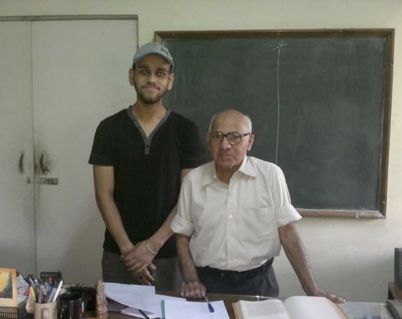
In his office.
The longer apprenticeship
For some, the relationship with him stretched across decades. Their tributes are longer because their debts were larger. They came back to him for research, for life decisions, for help making sense of things he had never agreed to be responsible for in the first place.
Arunima Shukla
Student, friend, mentor, guide
I have many memories with him, but one of the strongest ones is from the time he was guiding me while I was writing my thesis. During that period, he shared a thought with me that has stayed with me ever since and remains one of the most valuable lessons I have learned.
He told me that whenever you receive a cup of chai, a cup of coffee, or even a simple piece of roti, you should always feel grateful. That small thing reaches you only after a long chain of hard work by many people. The chapati on your plate exists because a farmer worked hard in the fields to grow the wheat. Then someone transported and sold it. Someone cleaned and ground the wheat into flour. Someone packaged it and brought it to the market. Finally, someone at your home prepared it for you.
Only after all these efforts does that chapati reach your plate.
So always remain grateful and humble. Remember that the simple food you receive is possible because many people are doing their jobs sincerely. You don’t always have to stand at the borders to serve your country. If you do your work well and with honesty, that itself becomes a meaningful contribution to the nation.
That lesson taught me to always stay grounded and appreciative of the unseen efforts of others.
Nituparna Dey
Ph.D. (Chemical Engineering, IIT Delhi); student since 2017
Since 2017, I had the privilege of knowing and learning from Sir. Through countless conversations about my PhD journey, academics, life, and even spirituality, speaking with Sir always felt like being at home. He was not just my Thermodynamics professor, but a mentor, a guide, and someone who always believed in me, and always helped to grow.
Sir is a soul full of compassion and love for everyone and everything around. At the end of our every conversation, he would always lovingly say, ‘Prabhu se hamesha prarthana karte rahe, aur unki kripa sab par bani rahe’. His words and thoughts were always filled with wisdom and utmost grace, and will stay with me forever.
I will carry Sir’s guidance, love, and kindness with me always. I am truly grateful to God to have been connected with him in this lifetime.
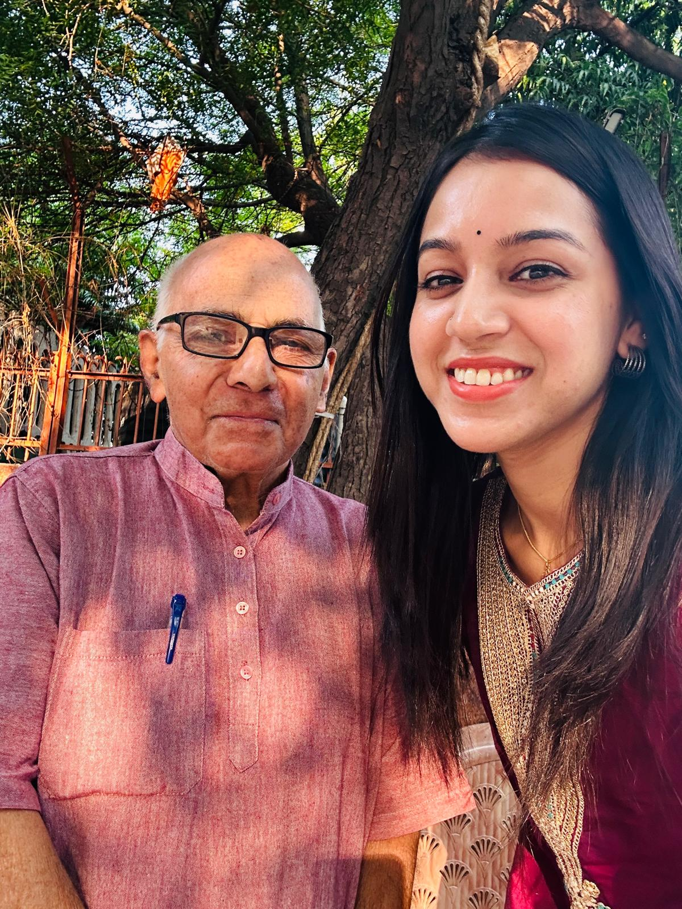
The last time I met Sir in person, at Gyandeep Apartments. We spoke many times after, but I’ll forever cherish this moment. — Nituparna Dey
Shantanu Roy
Executive Director IITD-AD; Professor of Chemical Engineering. Student of his, then colleague, for over thirty-five years.
Prof. A.K. Gupta was the steady anchor of my life for over thirty-five years. We first met in July 1990 during our Chemical Engineering orientation at IIT Delhi. As a young student, I didn’t yet grasp the full depth of his wisdom, but his words on sacrificing for one’s country and using engineering for the global good were instantly inspiring.
In the classroom, he was a truly transformative teacher. Even when we were up to silly pranks right in the middle of his lectures, he never lost his composure. He dealt with our youthful mischief with a characteristic calmness and inspiration, turning even those moments into lessons in character. He was deeply committed to his students, ensuring that even the weakest in the class could master the material. Outside of academics, his dedication to social causes, like blood donation, taught us the importance of serving others.
Whether I was visiting him during my return trips to Delhi or later joining him as a faculty member in 2004, he remained my formal mentor and a constant presence through every high and low. He never missed a milestone, always remembering important dates and offering a calm, prayerful strength during challenging times.
Having met him just a few weeks before his passing, I found him still radiating that same kindness. He exposed me to philosophies, books, and a level of goodness I have seen in no one else. I feel like a better person simply for having spent time with him, and I will miss him more than I ever realised I would.
Prof. Vivek Buwa
Deputy Director (Strategy and Planning), IIT Delhi. Colleague for 20 years.
I was very fortunate to be associated with Prof. A. K. Gupta. He was a great mentor. I fondly remember countless discussions with him on wide-ranging topics. He was always there to advise whenever it was needed.
The last meeting with him, 8th January 2026.
Prof. Ganapati D. Yadav
Bhatnagar Awardee; FNA, FASc, FNAE. Former Vice Chancellor, ICT Mumbai. Peer for four decades.
I had known him for the past four decades. Very sad to know his demise. May his soul attain moksha. Om Shanti.
Shachi Mittal
Assistant Professor, Department of Chemical Engineering.
Prof. A.K. Gupta played a huge role in being not only a great teacher and mentor in my life but also a guiding light. The dedication he showed towards his students, his hardwork and the ethics and principles he believed in and practised every single day inspire me to this date. I still remember how immensely he believed in me, became so proud and joyous in every accomplishment of mine. After graduating, no IIT visit would feel complete unless I got to meet him, so visiting next time would be bittersweet. I still hold onto a diary of his with motivational quotes he gave me and said “I know you will do big things in life”.
I hope I can live by his teachings and honor him by giving back and spreading knowledge and joy as he did in his students’ lives.
Venkatesan Venkata Krishnan
Senior Lecturer, Newcastle University. Student, then close colleague.
Oh, this is a deeply sorrowful moment for all of us, who have been touched so much by Prof. AKG’s kindness, sincerity and moral uprightness. He was a genuinely great soul, among all of us. Personally he provided so much guidance to me, as a student, and later on as a close colleague, providing me great help during a very difficult time in my life. My prayers for his family.
satyajit singh
PhD advisee.
He was my PhD supervisor. He treated me as his own child. He was a great teacher and a great human. He visited me in Hyderabad in September ’24, just a year after my surgery; he travelled in sleeper class with me. He visited my mom’s family hometown also. I was so blessed to have him as a teacher and a guide.
Roshani Sequeira
PhD candidate. Owner, Mosaiques in Architecture & Planning Consultancy.
Professor AK Gupta was one of the referees for my PhD thesis. Feeling really sad on getting to know of his demise. Heartfelt condolences. May his soul rest in peace.
My heartfelt condolences. I will always preserve the books and spiritual notes he gifted to me.
Parallels between Thermodynamics and Human Life
Two years before he passed, he printed a few copies of a short paper at home and handed one to his grandson. It was titled “Parallels between Thermodynamics and Human Life.” A few lines from its abstract:
There are many parallels between concepts of thermodynamics and different aspects of human life. The origin of this thinking arose from the following observations:
Gibbs energies of a liquid and vapour in equilibrium with each other are equal, and
the same soul (or Aatma) dwells in all living beings.
One of the analogies he proposed:
Condensation of exhaust steam and recycle of condensate water for generation of high-pressure steam is parallel to reincarnation (rebirth) of the soul.
Another:
Happiness = Desires fulfilledDesires one has
He had spent a lifetime teaching that the equations of phase equilibrium and energy balance were not, in the end, separate from how a person ought to live. He was the kind of chemical engineer who would have agreed quietly that this was the only equation he had ever really been teaching.
Family
Tarun Mahajan
Family
Dr. Ashok Kumar Gupta happened to be my grandfather by relation, but to me, my sister (Tanvi) and mother (Nivedita), he was always a dear friend.
He was one of the closest people in my life, someone with whom I could share everything: personal moments, professional thoughts, and even the smallest details of daily life.
I still remember my college days when thermodynamics was one of my weak subjects and something I wasn’t particularly interested in. The moment he came to know about it, he called me to his office at IIT Delhi and patiently explained the fundamentals to me.
About two years ago, he shared something very special with me, his writing on the correlation between thermodynamics and human life. He had printed it himself at home and handed me a copy. The title was: “Parallels between Thermodynamics and Human Life.”
There are countless memories from our meetups, long phone calls, and WhatsApp chats. I could keep writing, but…
Chacha Ji (as we all lovingly called him) has left behind teachings that will stay with us not just for life, but for generations.
I will end with one of the greatest lessons I learned from him:
“Let us all be thankful and grateful to the Almighty for everything.”
Tvisha Gupta
Family
Chachaji’s teachings paved a beautiful way to approach life that we will certainly cherish forever. Throughout my entire childhood, I have fond memories of him visiting us every weekend and talking to us about what new we had learnt at school in that week.
Nivedita Gupta
Family. Message shared on the family’s behalf by Tanvi Mahajan.
अशोक चाचाजी (प्रो. अशोक कुमार गुप्ता, मेरी आध्यात्मिक यात्रा के प्रेरणास्रोत) को याद करके बार बार भावुक हो जाती हूँ, गला भर आता है, आंखें नम हो जाती हैं। सम्भवतः, ईश्वर का धन्यवाद कर रही हूँ और कृतज्ञता प्रकट कर रही हूँ कि ऐसी पुण्यात्मा का सान्निध्य प्राप्त हुआ।
अंतिम भेंट 8/3/2026, नौवां दिन ICU में, पूरे होशोहवास में, oxygen और pipes लगी हैं, दरवाजे से आता देख एक बड़ी सी मुस्कान। बातें वैसे ही, जैसे करते थे, “तुम्हारा स्वाध्याय कैसा चल रहा है?” ICU में hallucination के शिकार नहीं हुए। उनका दोहराया गया वाक्य “ईश्वर से प्रार्थना करो, ईश्वर सभी के कष्ट दूर करें”।
उस जीवात्मा ने व्यक्ति से समष्टि की यात्रा कर ली थी। सदा ज्ञानवान व आनंदित रहने वाली वह आत्मा, परमानंद को पाना चाहती थी। चाचाजी ने अपने जीवन में श्रीमद्भगवद्गीता को चरितार्थ किया है। व्यक्तिगत जीवन में यम, नियम का पूरा पालन, धर्म के दसों लक्षण उनमें। हर घड़ी ईश्वर प्रणिधान। चाचाजी कैसे हो? “ईश्वर की अपार कृपा”।
ईश्वर हमें शक्ति दो कि हम भी चाचाजी का अनुकरण कर सकें। यही सच्ची श्रद्धांजलि है।
A life of small disciplines
From his sister-in-law’s recollection, compiled by Nivedita Gupta. The shape of his days.
To treat one’s elder brother and his wife as one’s own parents.
To use as little as possible. A simple, plain life of giving and service.
Regular blood donation.
A weekly fast on Sunday nights, kept since the 1960s, to reduce food consumption and to encourage national discipline.
To sleep on the floor.
To do sandhya in the evenings.
To do swadhyaya, daily self-study of scripture.
No fan. No television.
News only on the radio, to avoid information overload.
Bajra millet, every day, for the birds.
Never to insult food.
To be a patient householder.
When asked how he was, the answer was always the same: “ईश्वर की अपार कृपा।” The boundless grace of God.
Photographs
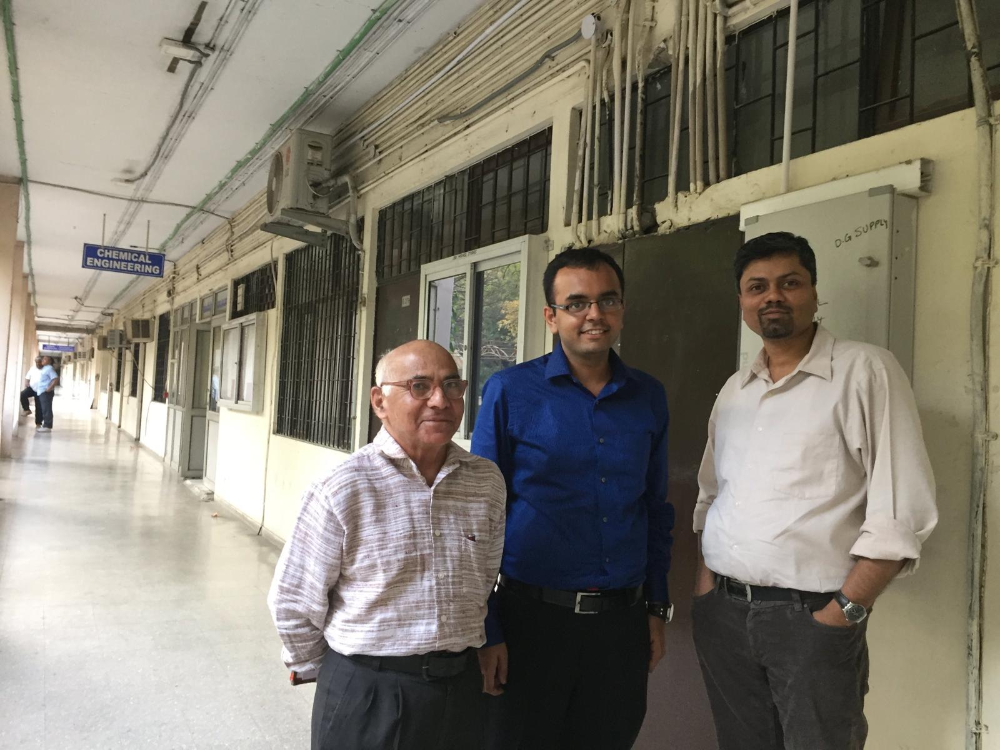
In the Chemical Engineering corridor, IIT Delhi.
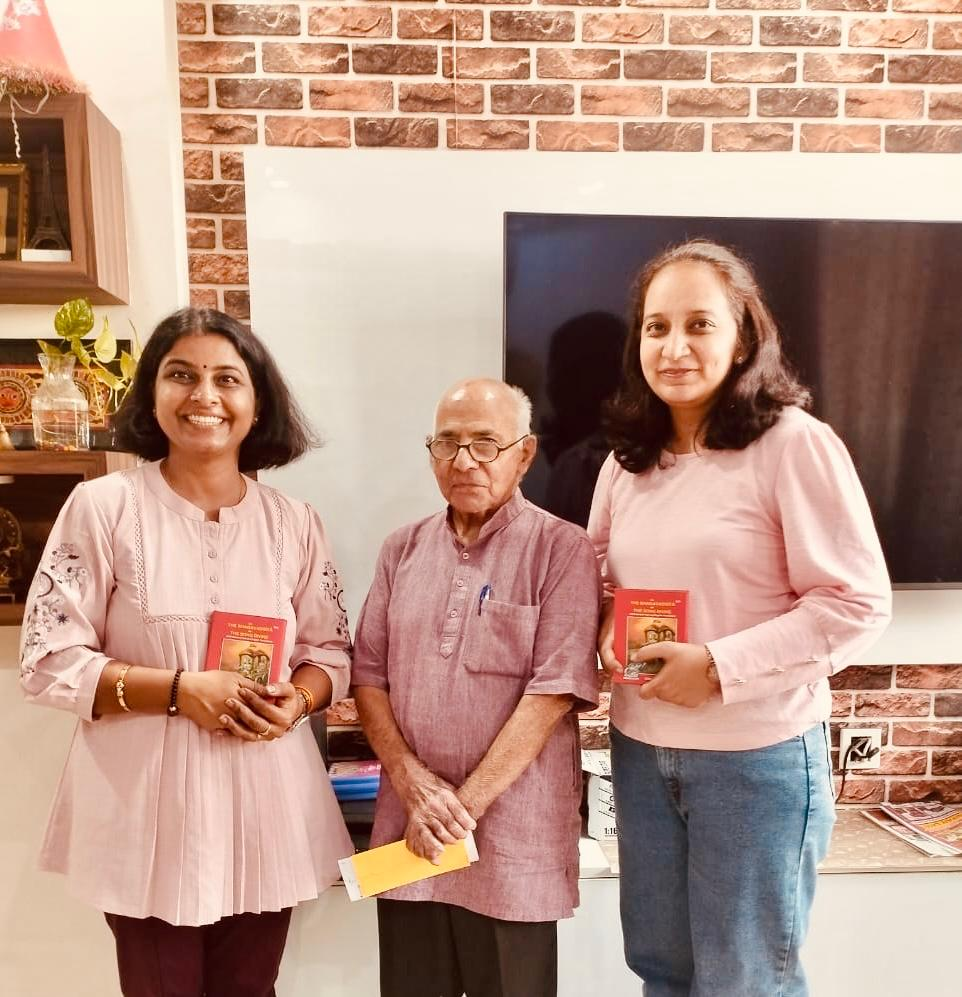
The day he gifted a copy of the Bhagavad Gita to two of his students.
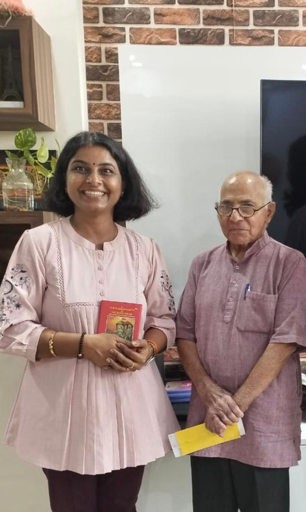
A birthday cake at his home, October 2024.
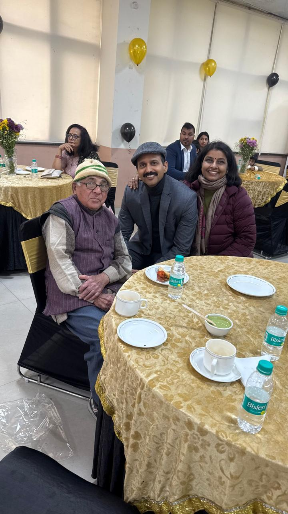
A winter gathering on campus, January 2026.
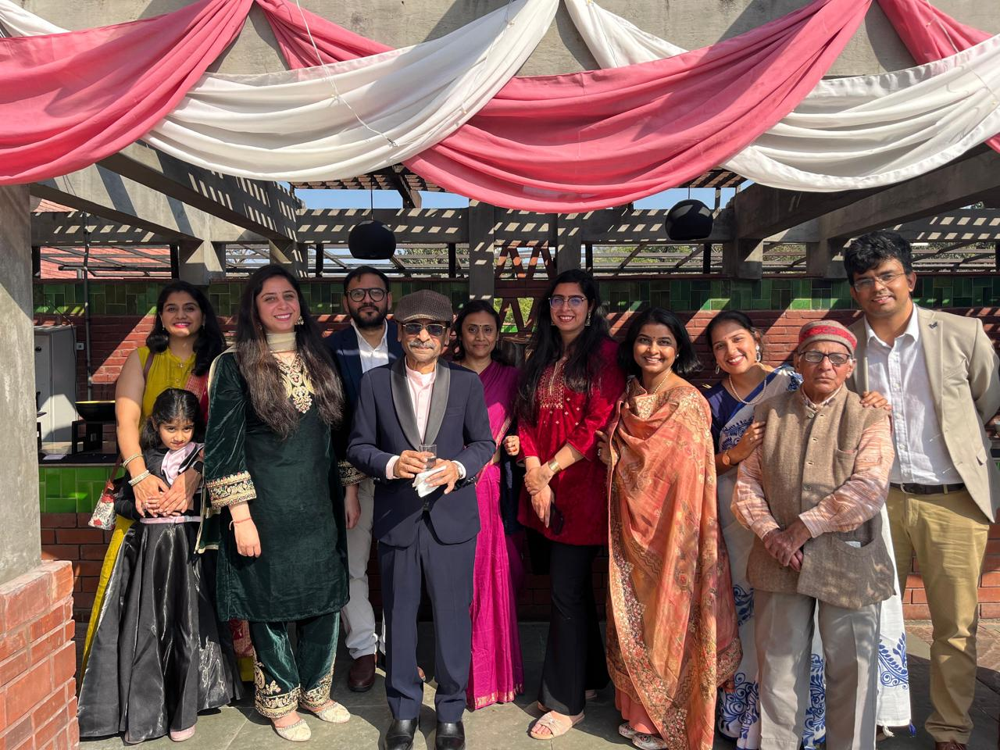
Prof. Bhaskarwar’s daughter’s reception, 14 February 2026. One of his last public outings.
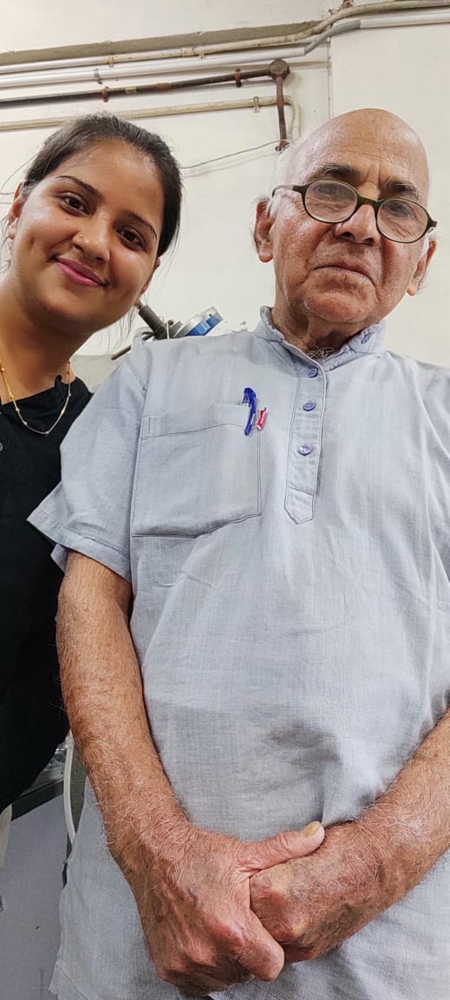
A visit at home, late 2025.
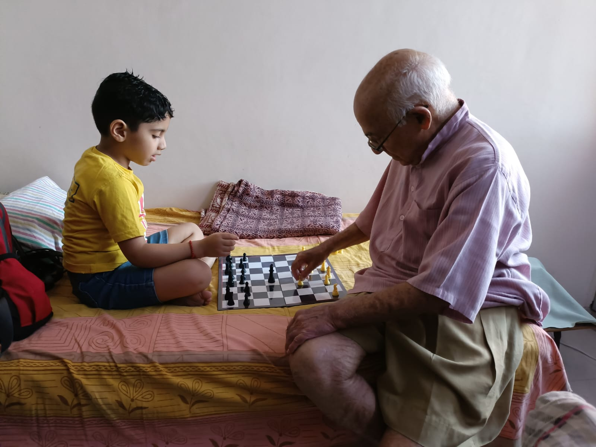
A quiet afternoon, playing chess at home.
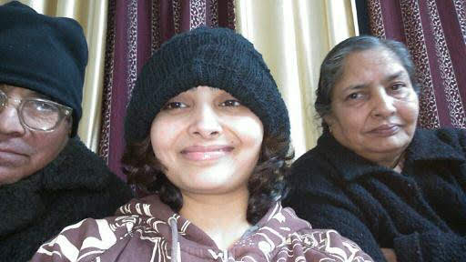
A family photograph, decades earlier.
In motion
Two short clips, sent in alongside the photographs. Watching him speak, in his own voice, is its own kind of tribute.
Prof. AKG, telling the story of his journey, recorded by one of his students. — Shared by Arunima Shukla.Time with family.